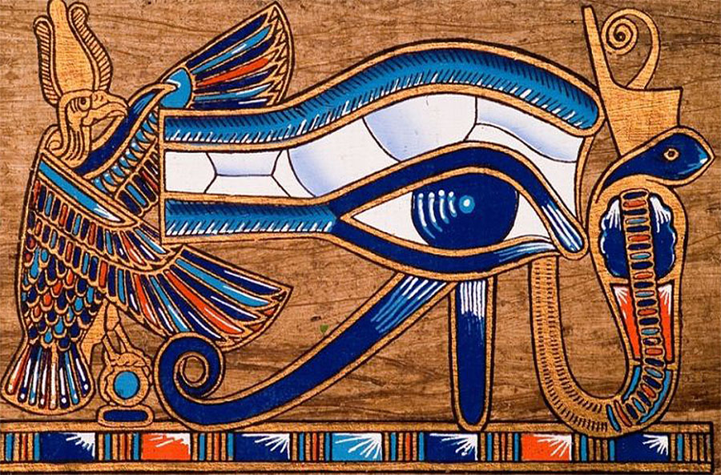
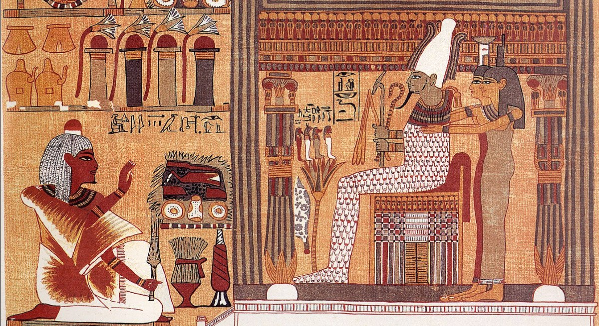
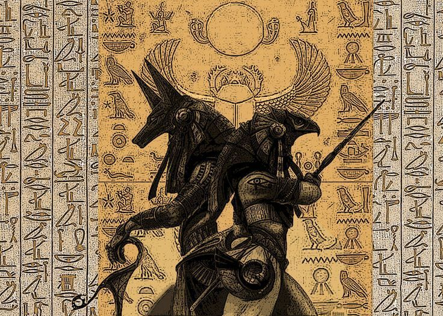
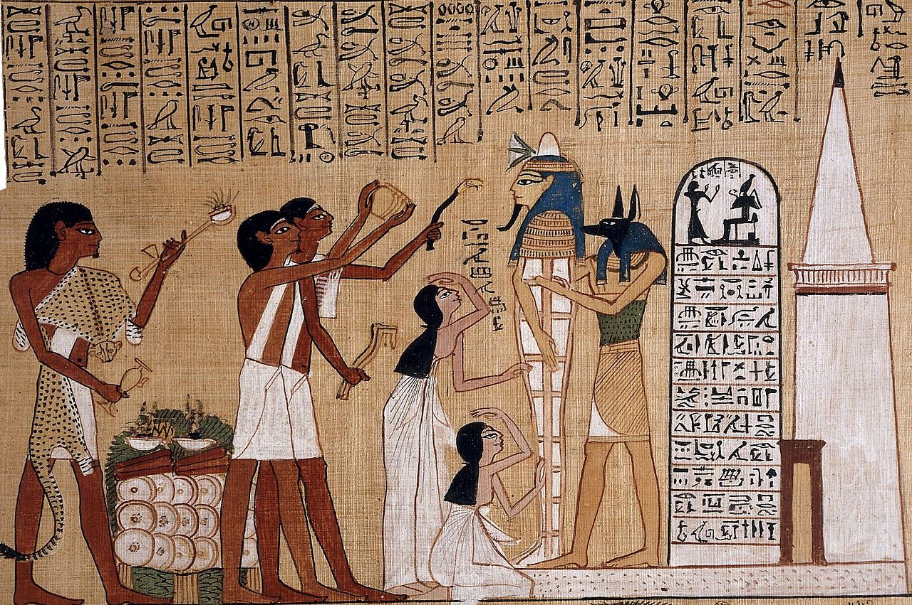

Major myths
The Story of Ra: Creation Myth
Not only is Ra credited with creating all the gods of the earth, he also traveled across the sky every day as the sun. At night, Ra would journey to the underworld, defeating the allies of chaos. Ra also ruled on Earth as the first Pharoah. Egyptian kings claimed they were descended from Ra, thus giving credence to their seat on the throne. They called themselves "The Son of Ra".

The eye of Ra
Isis and Osiris: Murder and Revenge
Isis and Osiris were two of the four children of Nut, the earth goddess. Isis and Osiris were married. As the eldest child, Osiris ascended the throne and the people loved him, but his brother, Set, was jealous of this and sought revenge. Set killed Osiris, cut him into pieces, and disperse the pieces all over Egypt.
Isis, however, had great magical powers. She traveled across the land, collected all the pieces of Osiris, breathed life back into them, and resurrected him. Soon, they conceived a child together, Horus, but Osiris could not return to the land of the living and went on to rule the underworld.

Isis and Osiris: Death and Rebirth in Ancient Egypt
Horus and Set: A Mythical Murder Plot Continues
When Horus grew to be a man, he challenged Set to the throne. A series of battles ensued but, to no surprise, Set didn't play fair and kept coming out the victor.
Eventually, Isis stepped in to help Horus. She set a trap for Set, but he begged her for his life and she let him go. This infuriated Horus. His rage was so strong that it even upset the other gods. In a final match, a boat race, it looked like Horus was going to be the victor. Infuriated, Set turned into a hippopotamus and attacked Horus' boat. Yet another fight ensued and their fellow gods declared the match a tie.
In the end, Osiris was consulted to see who should be king. Osiris declared that no man should take the throne through murderous ways, as Set had. In the end, Horus took his rightful place, while his father continued to rule the underworld.

Horus vs. Seth
Anubis: A Death Myth
Anubis was an ancient Egyptian god who had many roles around death. He was initially the lord of the dead but as Osiris became more popular he took over that role. Anubis' story was then changed and he came Osiris' son and helper in the afterlife.
Anubis was the protector of tombs and inventor of mummification. He was also tasked with taking the dead souls to the underworld and overseeing the weighing of the heart.

Opening of the mouth ceremony